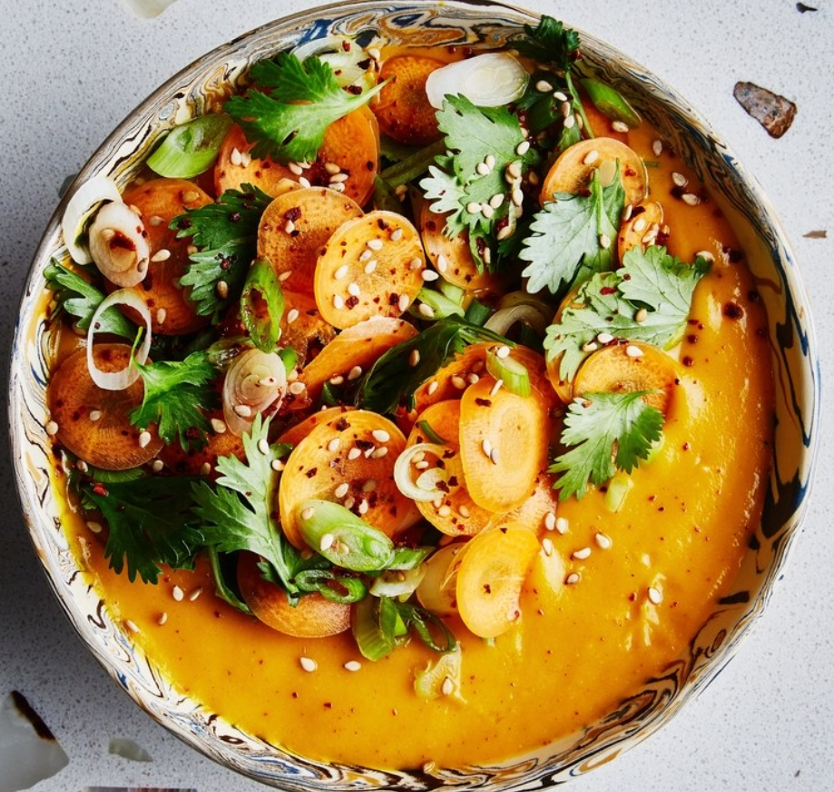

Spiced Coconut Carrot Soup
🕒
🙂
📄
30 mins
4 servings
Nutrition
INGREDIENTS
1 tablespoon coriander seeds
2 tablespoons virgin coconut or extra-virgin olive oil
1 Tbsp. honey
1½ pounds carrots, peeled, chopped (about 4 cups), plus 1 carrot, thinly sliced
Kosher salt
2 red chiles, such as Fresno or cayenne, seeded, chopped
1 large shallot, chopped
1 1-inch piece ginger, peeled, finely grated
4 garlic cloves, chopped
2 teaspoons curry powder
1 15-ounce can unsweetened coconut milk
2 tablespoons fresh lemon juice
Crushed red pepper flakes, toasted sesame seeds, sliced scallions, and/or cilantro leaves (for serving)
RECIPE PREPARATION
Finely grind coriander seeds in spice mill or with mortar and pestle; set aside.
Heat oil in a small pot over medium-high. Add chopped carrots, season with salt, and cook, tossing occasionally, until lightly browned around the edges, 5–6 minutes. Add chiles, shallot, ginger, garlic, curry powder, and reserved ground coriander and cook, stirring often, until shallot and garlic are softened, 4–6 minutes. Add coconut milk and 1½ cups water. Bring to a boil, then reduce heat and simmer, stirring occasionally, until carrots are tender, 20–25 minutes. Add fish sauce, if using. Purée with an immersion blender or, carefully, in small batches in a blender until smooth (make sure the small cap set within the blender jar lid is removed so that steam can escape). Season with salt, if needed.
Toss sliced carrot with lemon juice in a small bowl; season with salt. Add a pinch of red pepper, a few pinches of sesame seeds, and a handful of scallions and/or cilantro leaves and toss to combine.
Divide soup among bowls. Top with carrot-herb salad just before serving.